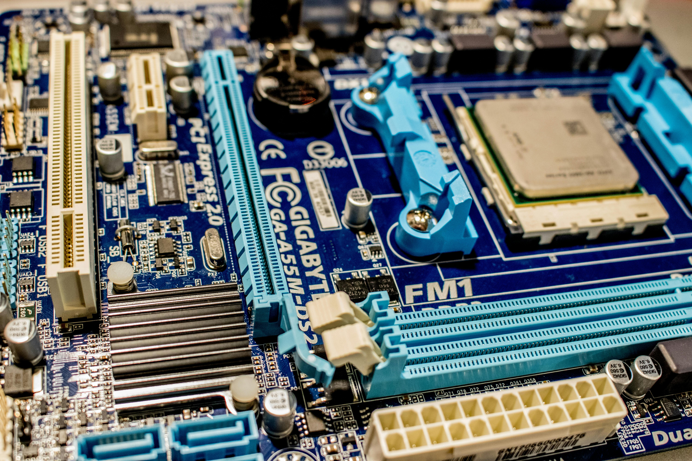

Teknik Informatika
Gudangnya Developer Handal
Mengolah logika hingga menjadi hal yang tak banal. Dari kode sederhana hingga algoritma yang kompleks, Menciptakan solusi untuk dunia yang semakin modern dan fleks. Keyboard adalah senjata, layar menjadi kanvas, Merangkai dunia digital tanpa batas. Jadi, mari terus berkarya tanpa henti, Teknik informatika, masa depan ada di sini!. Salah satu lulusan program Teknik Informatika adalah saya sendiri.
Untuk informasi lebih lanjut tentang program ini dengan pengalaman saya di teknik informatika, Anda dapat klik di sini.
